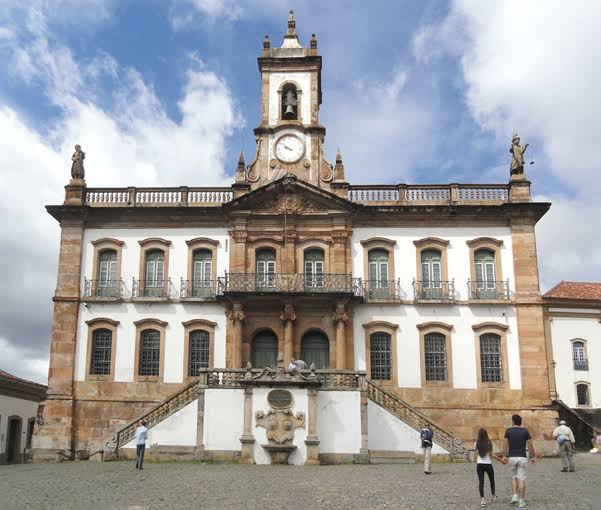
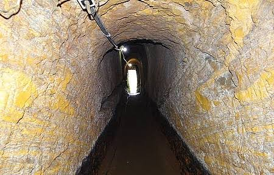
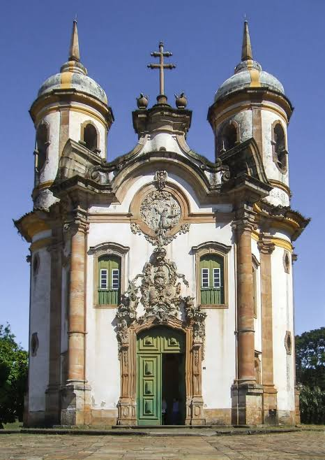

Ouro Preto é um município brasileiro localizado no estado de Minas Gerais, na Região Sudeste do país. Sua população estimada em 2018 era de cerca de 74 mil habitantes. Localiza-se na latitude 20º23'08" sul, longitude 43º30'29" oeste e altitude média de 1 179 metros.
O município foi fundado em 1711, por meio da fusão de diversos arraiais, fundados por bandeirantes. No município, há treze distritos: Amarantina, Antônio Pereira, Cachoeira do Campo, Engenheiro Correia, Glaura, Lavras Novas, Miguel Burnier, Santa Rita de Ouro Preto, Santo Antônio do Leite, Santo Antônio do Salto, São Bartolomeu e Rodrigo Silva, além da sede.
Ouro Preto localiza-se em uma das principais áreas do ciclo do ouro. Oficialmente, foram enviadas a Portugal 800 toneladas de ouro no século XVIII, isso sem contar o que circulou de maneira ilegal, nem o que permaneceu na colônia, como por exemplo o ouro empregado na ornamentação das igrejas.
O município chegou a ser a cidade mais populosa da América Latina, contando com cerca de 40 mil pessoas em 1730 e, décadas após, 80 mil, mas é bom lembrar que a área de Villa Rica/Ouro Preto era muito maior englobando as atuais Congonhas, Ouro Branco e Itabirito. Àquela época, a população de Nova York era de menos da metade desse número de habitantes e a população de São Paulo não ultrapassava 8 mil. A Cidade Histórica foi o primeiro sítio brasileiro considerado Patrimônio Mundial pela UNESCO, título que recebeu em 1980. Foi considerada patrimônio estadual em 1933 e monumento nacional em 1938.


